Láminas A4 | Diseños Metalizados
Set de 3 láminas a elección · $3.500

Diseños exclusivos con acabado metalizado que combinan arte y fe, creando piezas únicas para decorar con propósito.
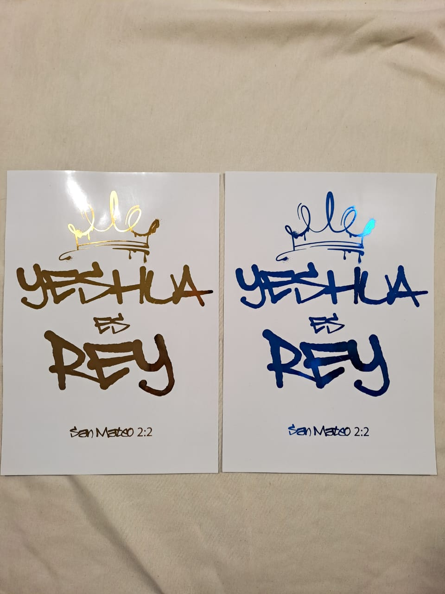
🖼️ Características:
Tamaño: A4 (21 x 29,7 cm)
Papel fotográfico de alta calidad
Detalles en foil metalizado
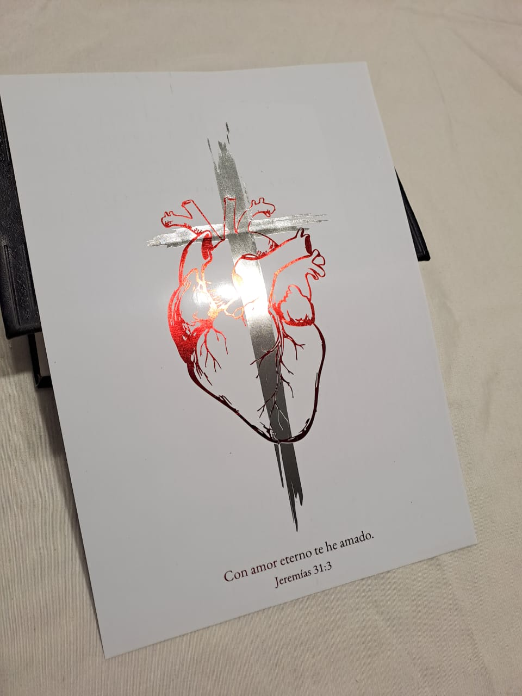
Una lámina que expresa el amor más profundo y eterno ❤️✨
El diseño presenta un corazón en foil rojo, atravesado visualmente por una cruz en foil plateado, simbolizando el amor sacrificial y eterno de Dios. La combinación de colores y brillos crea una pieza impactante, llena de significado.
Debajo, la frase “Con amor eterno te he amado” (Jeremías 31:3) refuerza un mensaje de identidad, gracia y amor incondicional.
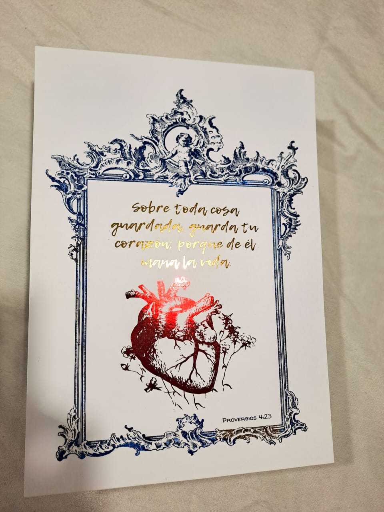
Una lámina que une belleza, cuidado y profundidad espiritual 🤍
El diseño presenta un delicado marco de estilo victoriano, con un pequeño ángel en la parte superior, enmarcando un corazón que florece en el centro. Todo realizado en foil, generando un efecto luminoso y elegante.
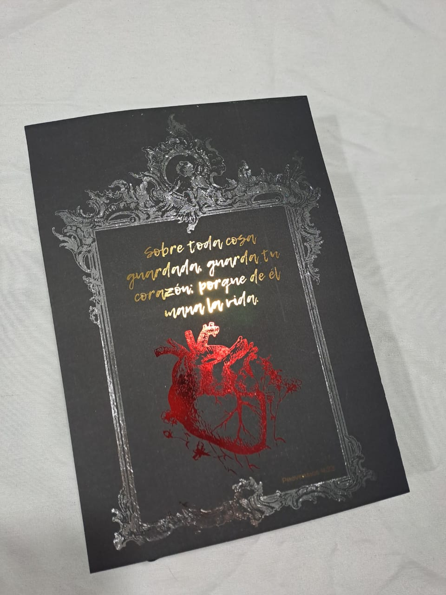
En su interior, el versículo de Proverbios 4:23 en estilo manuscrito refuerza su mensaje: guardar el corazón como fuente de vida.
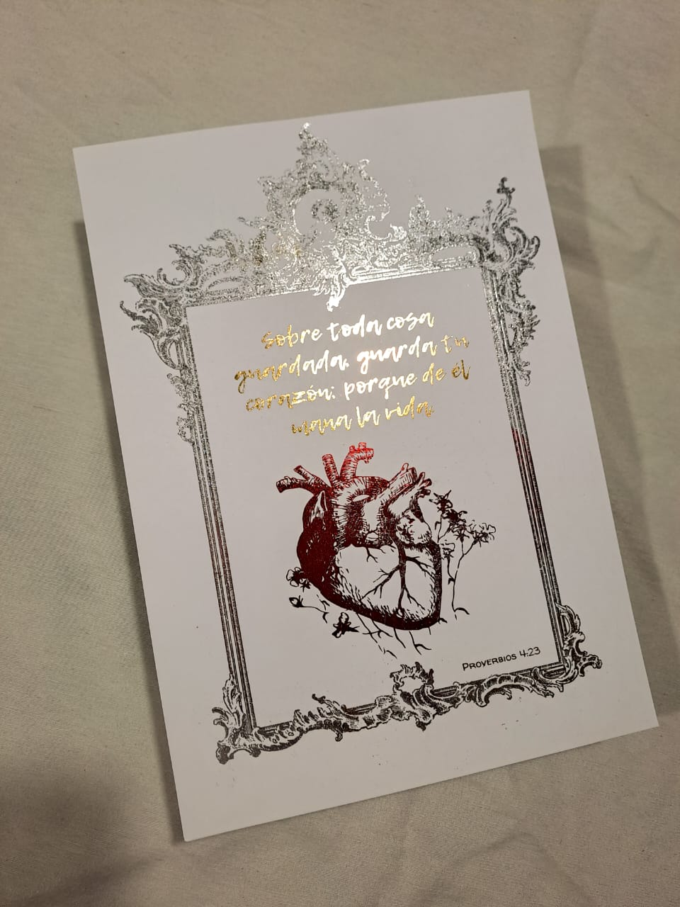
Una pieza que recuerda la importancia de cuidar el corazón, donde nacen todas las cosas ✨
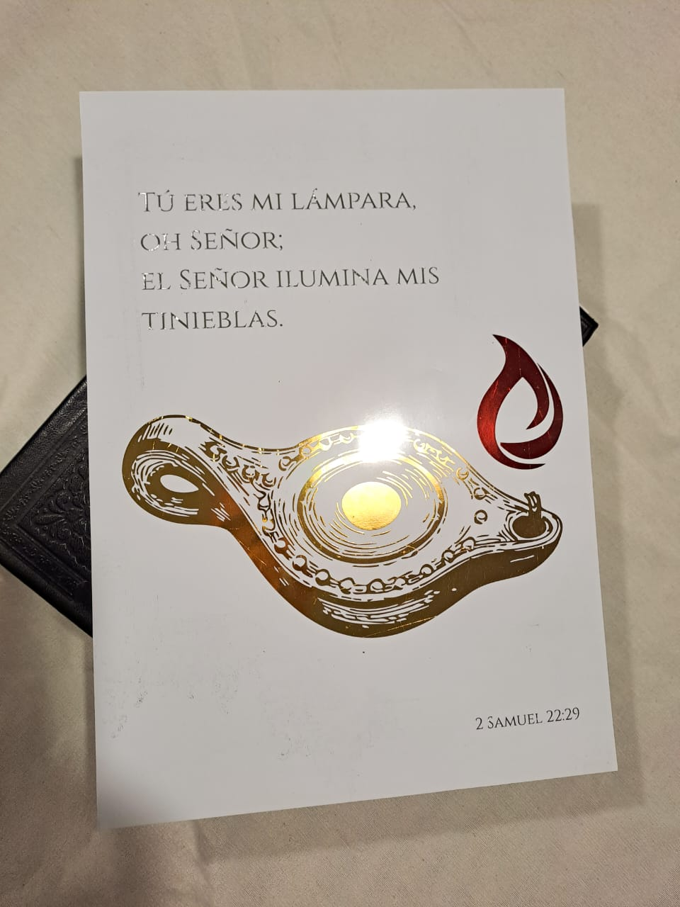
Una lámina que representa luz en medio de la oscuridad ✨
El diseño muestra una lámpara de aceite antigua en foil dorado, con una llama en foil rojo que simboliza vida, guía y presencia. La composición transmite calidez y dirección, evocando la luz de Dios en cada camino.
En la parte superior, la frase “Tú eres mi lámpara, oh Señor; el Señor ilumina mis tinieblas” (2 Samuel 22:29) declara una verdad poderosa: Su luz disipa toda oscuridad.
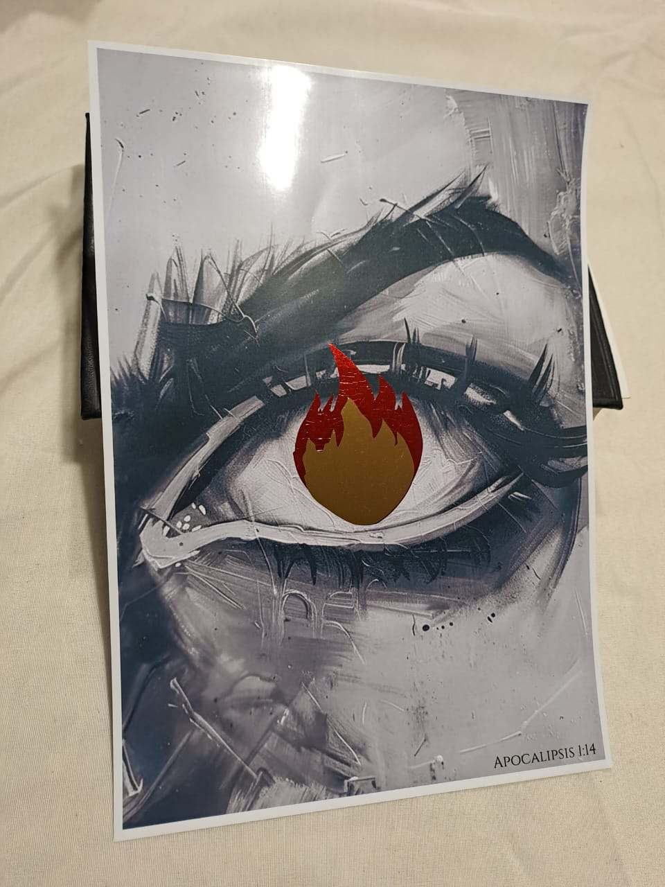
Una lámina que impacta desde la mirada 🔥
Este diseño en blanco y negro captura la profundidad y la intensidad de la mirada de Yeshua, resaltada con un detalle en foil dorado y rojo que simboliza fuego, pasión y presencia.
Impresa en papel fotográfico de alta calidad, medida A4, cada pieza combina contraste, luz y significado, creando una obra que no pasa desapercibida y que invita a la reflexión.
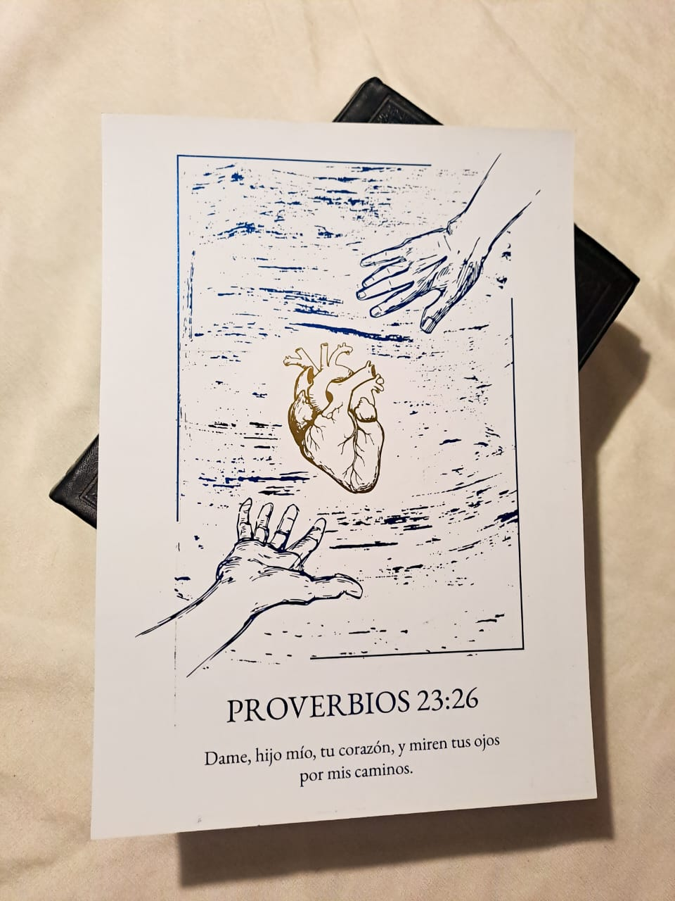
Una imagen que representa entrega, amor y conexión con Dios 🤍
Esta lámina muestra un corazón sostenido entre dos manos: una que desciende y otra que se eleva, simbolizando la entrega del corazón humano hacia lo divino. El diseño está realizado con detalles en foil que aportan luz y profundidad a la ilustración.
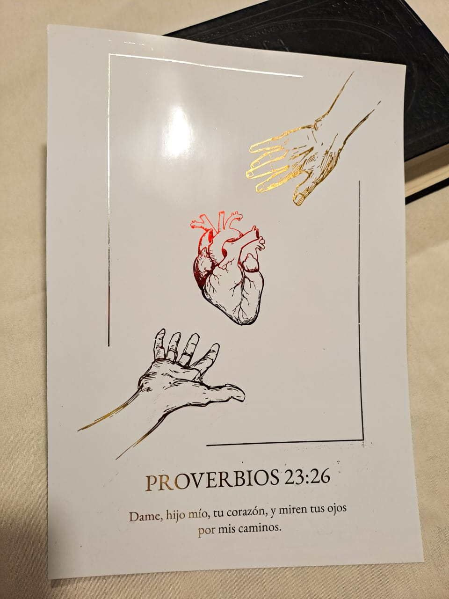
Acompañada por el versículo de Proverbios 23:26, esta pieza invita a rendir el corazón y caminar en intimidad con Dios.
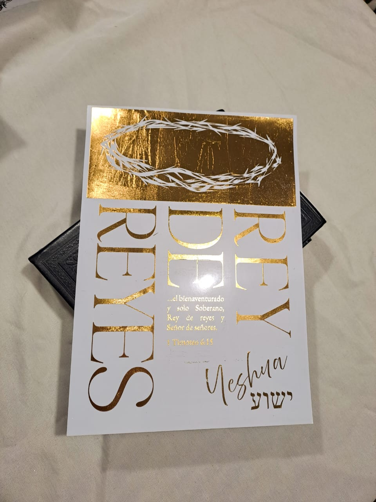
Una pieza visual poderosa que declara una verdad eterna: Yeshua es el Rey de reyes y Señor de señores.
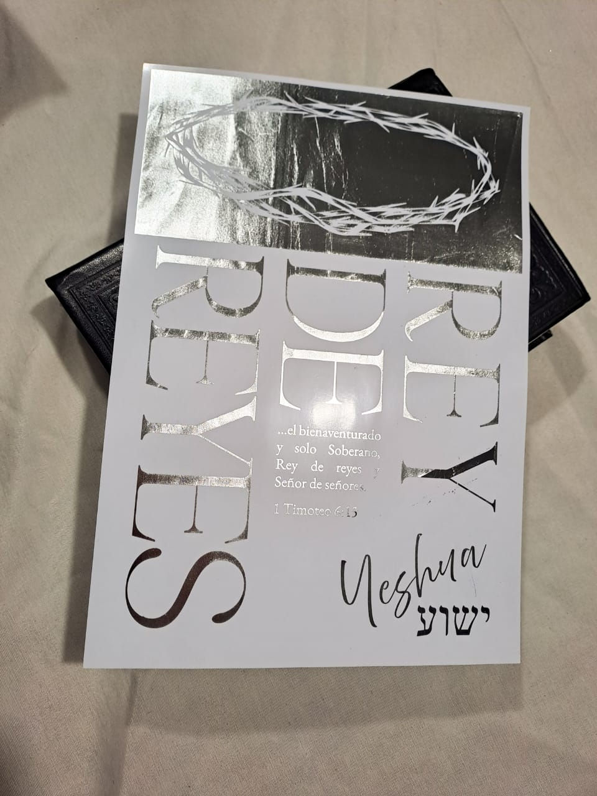
Este diseño combina elegancia y profundidad espiritual, incorporando una corona de espinas y un acabado en foil metalizado, que aporta brillo, relieve visual y un impacto único según el color elegido.
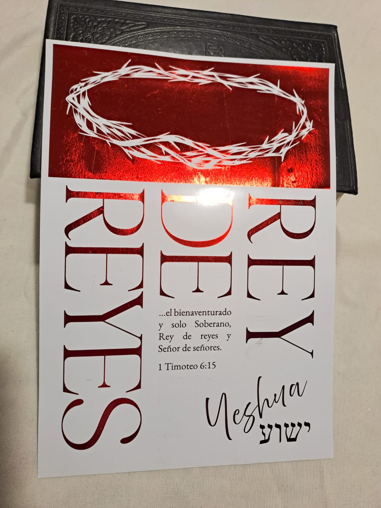
✨ Opciones disponibles:
Foil rojo: representa el sacrificio y la redención
Foil dorado: simboliza la realeza y la gloria
Foil plateado: transmite pureza, luz y elegancia
Incluye la cita bíblica de 1 Timoteo 6:15, reforzando su significado espiritual y convirtiéndola en una pieza ideal para decorar con propósito.
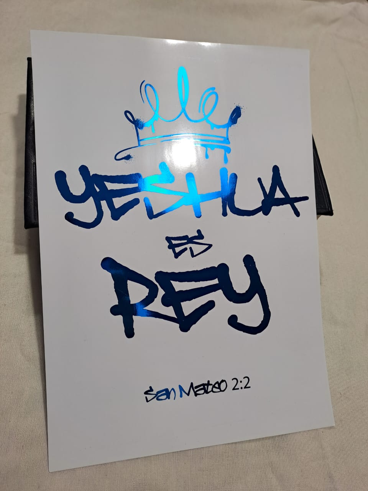
Dale un toque moderno y espiritual a tus espacios con esta lámina, diseñada con una estética urbana tipo graffiti y el poderoso mensaje “Yeshua es Rey”.
Impresa en papel fotográfico de alta calidad, esta pieza combina arte contemporáneo con fe, logrando un acabado visual impactante gracias a su detalle en foil (laminado metalizado) que resalta la frase con brillo y mucho estilo.
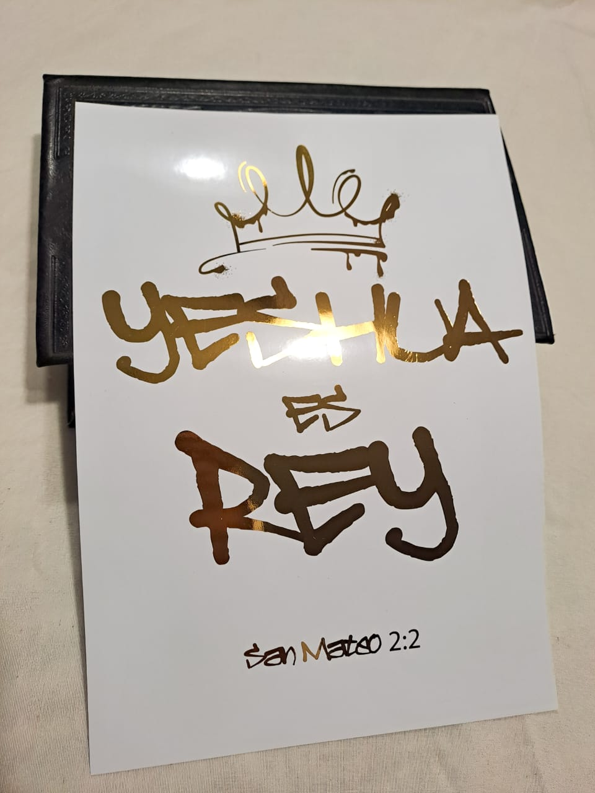
✨ Opciones disponibles:
Foil dorado: clásico, cálido y llamativo
Foil azul metalizado: moderno, vibrante y único
✨ Ideales para decorar, regalar o inspirar tu tiempo con Dios.